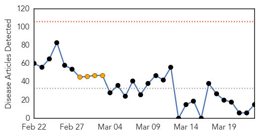
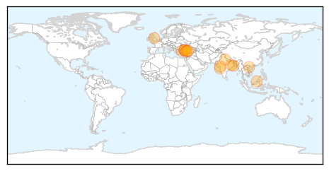
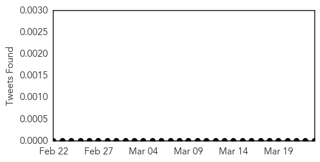

Swine Flu
30-Day Web Trend
0 alerts, 4 warnings

30-Day Twitter Trend
7 alerts, 0 warnings

Article Locations
Article Confidences

Top Articles:
- 1.000
- Health minister denies swine flu outbreak amid 19 deaths in 6 day
- 1.000
- Swine flu kills 30 in Turkey, minister assuages concerns
- 0.999
- 39 dead from influenza, Turkish health minister says
- 0.998
- 30 people died from swine flu since 2014
- 0.995
- Sun burns swine flu cloud
- 0.993
- Six fresh swine flu cases in Bengal
- 0.991
- Turkey rules out swine flu outbreak despite rising death toll
- 0.984
- Six fresh swine flu cases in Bengal
- 0.983
- Barriers to managing TB in emergency departments
- 0.981
- Six fresh swine flu cases in Bengal
- 0.980
- Health minister denies swine flu outbreak amid 19 deaths in 6 days
- 0.980
- CPI(M) demands urgent steps to tackle swine flu on war footing
- 0.957
- Swine flu claims fourth victim in state
- 0.924
- Vietnam reports outbreak of avian H1N1 flu among human - Xinhua
- 0.840
- Maharashtra to formulate legislation to curb swine flu-like epidemics
Top Tweets:
-
No tweets found for Mar 23, 2015
Chikungunya
30-Day Web Trend
0 alerts, 0 warnings
30-Day Twitter Trend
0 alerts, 0 warnings

Article Locations
Article Confidences

Top Articles:
- 1.000
- News Scan for Mar 23, 2015
- 0.999
- Are Viruses on the Rise or Does It Just Seem That Way?
- 0.999
- Chikungunya menace fails to grab attention
- 0.988
- GPs warned of mosquito-borne disease surge
- 0.977
- Plague of mosquitos carrying deadly diseases is headed for Britain, scientists warn
- 0.961
- FERAL DOG PACK kills SOUTH DAKOTAN ~ CANADA reports 21 HUMAN CASES of WEST NILE VIRUS in 2014 ~ CHIKUNGUNYA in MEXICO tops 400 ~ CHIKUNGUNYA in the AMERICAS now at 1.3 million cases and counting ~ MON
- 0.825
- Climate Change Will Bring Insect-Borne Diseases to Britain : HEADLINES : Youth Health Magzine
Top Tweets:
-
No tweets found for Mar 23, 2015